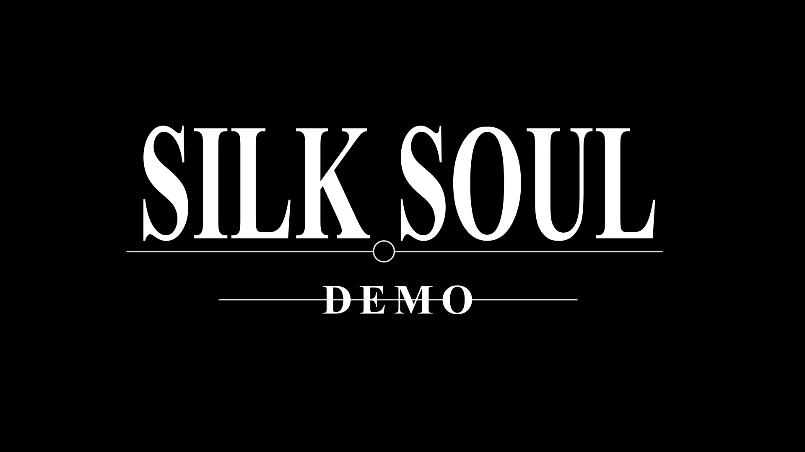

Silk Soul Demo
Descubra o inigmático mundo de Silk Soul nesta versão de pré-lançamento.
Em Silk Soul demo, descubra o grande futuro de Silk Soul numa versão demonstrativa e descubra o potencial do nosso jogo.